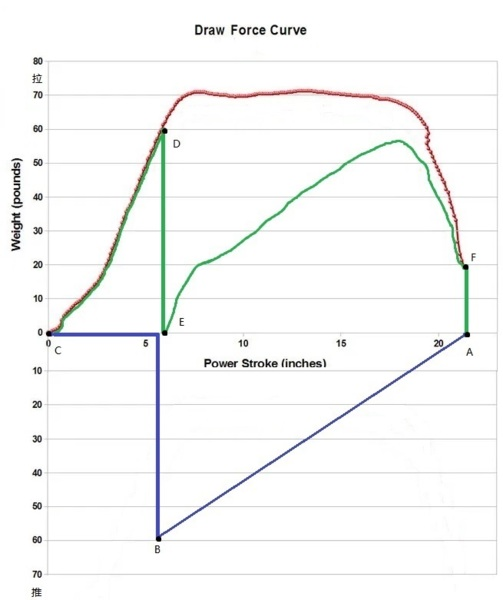

【歷史】【軍事】現代諸葛弩
2020-06-01 06:16:00
原文网址：https://blog.udn.com/MengyuanWang/137487763
30多年前剛到美國的時候，我並不確定會在這兒待多久，爲了不浪費這趟人生經歷，我自問美國有什麽台灣不容易接觸到的活動，結論是槍械（“射”）和駕駛飛機（“御”），我選擇了後者。其實我並不是不喜歡射擊，只是更偏愛技術性高、噪音小、危險性低的弓箭，所以在美國定居之後，也想過要練習射箭，可惜住家附近找不到合適的靶場。這是因爲美國人拿弓箭當嗜好的，絕大部分是爲了打獵，而不是Olympic式射靶。我不認爲殘殺野生動物有什麽趣味可言，連帶著對狩獵用的弓箭和靶場也意興闌珊。
不過弓箭是古代戰爭中的主要兵器之一，它的設計和製造是軍事史學的重要成分，所以我也一直從這個角度出發而有所關注。例如連發弩發明於中國，在國外也廣爲所知，一般稱爲“Chu Ko Nu”“諸葛弩”，這是因爲連發弩雖然在戰國時代已有應用，但是諸葛亮對其做了深入的研究和改進，因而得名。《天工開物》記載了一個諸葛弩的版本，但認爲它的射程威力不足，不適合軍事應用，只能居家防盜；這可能是個小型弩，古代的軍用連發弩應該會犧牲射速和便携性來獲得足夠的殺傷力。
近年來，一些歐美的業餘歷史愛好者開始仿造古代的冷兵器，以便獲得更精確的性能參數，瞭解其優缺點。他們往往把自己的研究過程和成果發表在《YouTube》上，與大衆分享。我特別注意弓箭類的資訊，例如英國人Tod’s Workshop（參見https://www.youtube.com/watch?v=DBxdTkddHaE ）曾經複製了從1545年沉沒的英國戰船HMS Mary Rose上發現的長弓，請來一位業餘長弓手（這些長弓的拉力Draw Weight高達160磅，比一般現代獵弓的60-70磅高出甚多，非有十年以上的苦練無法拉動），對著一面中古騎士胸甲（由另一位專門仿造中古護甲的業餘愛好者，根據1390年法國Cherbourg的原物所做的精確複製，從鋼材到尺寸都忠實再現；正面厚度2.5毫米，側面1.5毫米）在中近距離進行多次試射，發現無法擊穿其正面。著名的1415年Agincourt戰役中，英國長弓大破法國重甲兵，其實源自法軍群龍無首，沒有統一的指揮體系，結果一窩蜂地衝進英軍預設的袋型陣地，使得英國長弓手得以攻擊法軍隊形的側面和背面，這才成爲一面倒的局面。
另一個研究的方向，是利用現代知識和工具來改進冷兵器的設計和製造。在弓箭方面，最知名的是德國人Jörg Sprave，他的標志性發明就是受諸葛弩啓發的連發弩，不過他爲了改進射速，采用自由滑動的中間支撐，拉弦和發射姿態和弓相同，而不像傳統的弩。Sprave的滑動弩可以是純中世紀的版本（亦即只用當時就有的材料；參見https://www.youtube.com/watch?v=d6-UotZevrs），也可以搭配現代的複合弓（Compound Bow，我會在下面幾個段落介紹它的技術原理；蒙古的Composite Bow也被翻譯成複合弓，很容易造成誤解；Sprave的作品參見https://www.youtube.com/watch?v=NTJnyQ-bZLU）。它的射速高達每秒1.5發，比長弓的射速（大約每四秒一發）快6倍，必須用杠桿拉弦的諸葛弩就更不用提了。在射程威力上Sprave也沒有在機械上做犧牲，純粹受射手肌肉强度和耐力的限制，不過初始動能不如傳統的弩，這也是本文要討論的改進方向。
這裏我先解釋一下弓弩的物理原理：它基本上是一個彈簧，所以一般來説彈力和拉距成正比。弓的最大拉距（Draw Length），由射手的臂長和肩寬決定，普通在22-30英寸（550-750毫米）之間。到達最大拉距時拉力（Draw Weight）也最大；前面提到現代獵弓的拉力在60-70磅，也就是270-320N之間，而中世紀晚期的英國長弓，拉力達到160磅，相當於720N。取拉距的最大值（古代軍隊的弓箭手通常是選個子最大的壯漢來充任，因爲弓箭的威力對操作人員的體型和力道最敏感）750毫米，每次拉弓所需的能量高達270J。弓把彈性位能轉化為箭支動能的效率，主要由弓和弦的材質決定，現代大約是90%，古代可能比較接近80%，那麽長弓發箭的初始動能約爲216J。當時的木箭加鐵製的穿甲頭，總重為80g（根據來自HMS Mary Rose的樣本），對應著73m/s的初速。
我在《人類的起源》一文中曾提過，已知最早的弓箭在7萬年前出現於南非，是僅次於長矛的古老武器。最早的弩則出現在600BCE的中國，到500BCE希臘也有了自己的版本，可能是獨立發明的。弩比起弓的好處，主要是它對射手的體型、臂力和技巧要求低得多，可以在幾分鐘之内教會一個剛被徵召來的農民。這是因爲它可以藉助轆轤（Windlass）或杠桿來拉弦，然後用扳機來維持待發狀態。相對來看，長弓高達160磅的最大拉力就發生在待發姿態，連職業長弓手都不可能維持超過幾秒，所以他們通常是隨拉隨放，而這就減低了瞄準的餘裕。中古歐洲的重型弩，拉力可以高達1250磅（5600N，參見https://www.youtube.com/watch?v=MMoL_SBD6gw ），這時的拉距是6.5英寸（163毫米），彈性位能456J，初始動能365J；如果使用重50g的弩箭，初速可以達到121m/s。弩的主要缺點，在於射速低，所以連發機制對弩的意義比弓更為重大。
前面解釋了長弓的主要缺點，在於最大拉力發生在待發姿態，這對需要精確瞄準的山林打獵（如果沒有命中心肺要害，獵物往木叢裏一鑽，追蹤起來就有困難）影響較大，在軍事上因爲可以齊射反而不是太大的問題。最早的解決方案是反曲弓（Recurve Bow，即弓的兩端向前反曲，例如古代的蒙古弓和現代的Olympic競賽用弓），它可以使拉力的增加慢於拉距，在同樣的最大拉力和拉距限制下，總能量增加20-30%。

在1969年，美國人Hollis Wilbur Allen發明了Compound Bow，利用特殊形狀的滑輪（上圖）來改變拉力對拉距的函數曲綫，典型的如下圖，來自一型叫做Elite Envy的複合弓。這裏最大拉距被設定為22英寸（550毫米），最大拉力71磅（320N）不是發生在最大拉距上，而在大約1/3處。待發狀態拉力只有20磅，一般人也能輕鬆維持一段時間。居上的曲綫是拉弓時的拉力函數，其下的面積是總彈性位能（約爲320N*0.55m*0.8=141J）；下面的曲綫則是放箭時的推力函數，它所包下的面積是箭支的初始動能（約爲141J*0.9=127J）。發射30g重的碳纖維箭支，初速達到92m/s。打獵有效射程一般在30m左右（主要受準確度限制），用銳利的Broadhead箭頭來射野豬，如果沒有撞上骨頭，有時可以對穿軀幹。

在相同的拉距和拉力條件下，現代的複合弓能產生比英國長弓高將近100%的初始動能，而維持待發狀態所需的力道只有30%。當然，如果像Sprave那樣，用複合弓來拉動滑動弩，那麽因爲有扳機，所以待發拉力完全不成問題。
總結來說，一個體型中等、體力一般的現代人，即使在現代複合弓效率加倍的幫助下，仍然比不上中古時期專業的長弓手。Sprave的滑動弩只是進一步提高射速、消除待發拉力，在威力上沒有幫助。那麽是否有更進一步的巧妙設計，能在維持高射速的前提下，大幅提升初始動能，甚至到能正面擊穿中古板甲的地步呢？
Sprave注意到他的滑動弩比起傳統的弓弩多出了一個前推復位的動作，他靈感一來，覺得可以利用這個多餘的衝程來做機械功，纍積額外的彈性位能。於是他加裝了一個阻力彈簧，在推杆的過程中積蓄能量，在拉弓的階段釋放出來，想象中似乎可以幫助射手拉動更强的弓。他後來把彈簧換成弓，整個裝置由兩個方向相對的反曲弓組成，本月又把反曲弓升級為複合弓（參見https://www.youtube.com/watch?v=thMxjrMS-Go），觀衆們大呼爽快，但其實深入思考一下，就會明白他還沒有摸清楚正確的設計方向；這是因爲他是個Tinkerer，主要靠試錯來摸索，沒有從原理上仔細思考。

上面是Sprave二衝程滑動弩的拉力函數圖；這裏我們考慮一個拉力複合弓和推力彈簧的組合，並假裝弓和彈簧的能量轉化效率都是100%。紅綫來自複合弓，藍綫是彈簧，綠綫是兩者共同作用下的净力。Y軸的正向是拉力，負向是推力。在發射上一發弩箭之後，我們處在循環起點A。然後射手的右臂向前推動滑桿，逐步剋服彈簧的阻力，一直到彈簧的最大伸展點B。這時滑桿和彈簧解開連鎖，繼續自由前進到最遠點C。接著滑桿勾上弓弦，後拉到D點，彈簧解鎖，開始幫助射手拉弓，所以净拉力一下子大幅降低到E點。當射手把滑桿拉到代發位置F，扳機扣住弓弦，拉力回歸到零，也就是原本的起始點A。
我們的目標是在保持拉距和最大拉力/推力在局限範圍内的前提下，將初始動能最大化。但是這裏初始動能（即紅綫下的面積）並沒有增加，拉距沒有改變，而最大拉力/推力只是從71磅降到60磅（B和D點）。可見這個版本的二衝程連發弩以增加總重和複雜性為代價，並沒有獲得性能的大幅提高。
當然，一旦把拉力函數圖畫出來，應該已經有讀者能看出Sprave的失誤何在。最高效的設計，是在兩個方向都使用複合弓，以獲得平坦的拉/推力曲綫，而且這兩個複合弓應該有相同的拉距，但是相差剛好一倍的拉力强度。如果藍綫是像紅綫一樣的梯形而不是鋸齒形，深度又只有紅綫高度的一半，那麽就可以把最大拉力減半。換句話說，在同樣的拉距和拉力條件下，初始動能可以倍增。Sprave嘗試了複合弓+複合弓的版本，但是沒有想清原理，兩個弓拉力强度相似，只是稍微調整了拉距，結果損失了效率增益的大部。
其實我注意到這個滑動弩還容許另一個改進，就是可以把拉距也加倍。請注意，Sprave的設計在上圖C點對應著射手的雙臂向前平舉並排，其實完全可以讓右臂繼續前推，左臂後拉，等達到左手發弓的姿態，再轉向完成拉開主弓的第二衝程。如此一來，整個循環的X軸加長100%，初始動能也因此而再獲倍增。
總結來說，一個正確設計的二衝程滑動弩，可以容許普通人在射速更高的條件下，達到一般複合弓4倍的威力，亦即大約508J的初始動能，這是長弓的兩倍半，比重型弩還要高40%，甚至高於Glock 17手槍的槍口動能（490J）；百米之内要擊穿任何中古鋼甲，完全沒有疑義。
【後註一，2025/08/23】Youtube上有博主測試了幾種當代消費者可網購的商品手提弩（hand-held Crossbow，參見《How Dangerous are Crossbows?》；可能都是由中國的OEM代爲生產的，如果有讀者知道廠商信息，可以在留言欄分享），其中包含兩型由正文中所提的設計師Sprave所出品的連發速射版本，發射輕質弩箭時初始動能分別達到19J和42J，已經與古代軍用弓弩同級。但更有趣的是還有走高能强力路綫的型號，在發射29g弩箭時，實測動能達到340J，這已經是正文中追求的、手槍級別的能量，足以導致碳纖維弩箭基本只要碰到稍硬一點的目標就會損毀。其實弓弩的能量轉換效率隨弩箭質量而遞增（主要因爲可以減低弓身和弓弦這些隨動部件所分到的動能），如果製造商不是爲了153m/s的初速、以及其所帶來的平直彈道，完全可以換用100g左右的堅固鋼製弩箭，不但遠遠更加耐用（不過也可能廠商正是以賣刮鬍刀片的邏輯，在推銷3根100多美元的消耗品），而且破甲射程、初始動能和穿甲能力都會進一步大幅提升，我估計應該可以達到100m、500J和擊穿北約四級防彈衣的能力，這正是本篇正文所探討的：以現代科技能將弓弩類冷兵器提升到什麽層次？可惜這型現代弩雖然自帶齒輪搖桿，但拉弓過程仍然相當費時費事，持續射速頂多在每分鐘一發的量級，而騎兵可以輕鬆在20秒内突破其射程（輕裝賽馬一般可以以60km/hr以上的速度持續跑完幾公里賽程；騎兵雖然載重高些、馬匹慢些，一兩百公尺衝鋒極速必要時也可以超過40km/hr，歷史現實平均30+km/hr，約合8-9m/s，而再強的單兵弓弩，受氣動阻力影響，其瞄準射程也不會高於150m），因而實戰條件下並非碾壓式的存在。
8 条留言
我知道這篇文章不太符合博客的傳統精神：一般我只在乎對世界有實際影響的話題，而這個現代諸葛弩在現實裏高不成低不就，頂多算是成年人的大玩具。不過我既然已經發明了它，不寫下來有點可惜，讀者如果對軍事歷史有興趣可以參考，否則略過也沒有什麽損失。
现代的防弹插板small arms protective insert(SAPI)和古代的胸甲其实有异曲同工之妙。为了保护躯干不受小口径全威力弹（5.56x45类似的）的伤害，人类又一次把胸甲找回来了，当然材质完全不一样。
我練習射箭的時候，用的就是穿甲箭頭，基本就是淬過火的鋼做成鈍角圓錐狀，適合擊穿均質硬裝甲；如果是鎖子甲，最好是用銳角圓錐箭頭；如果是布料或其他軟纖維材質，鋒利的Broadhead的效率最高。
現代的穿甲彈，也是回歸箭支的長杆形狀，在減低風阻和集中撞擊衝力上都是最優。
520米只可能是最大射程，亦即朝天45°左右發射的結果，既無準頭、也無存速，在實戰上只對輕甲兵集群有點騷擾作用，一般情況下是不值得這樣浪費箭支的。電影/電視導演喜歡它的視覺效果，可是中世紀的畫作裏，弓箭手永遠都是平射，有效射程基本在100米以内，而且對手的甲胄越高級，有效射程就越短，如果是一流的板甲，那麽只有最強的弩在極近距離才能射穿正面。
弩的確是宋兵依賴的主要利器，不過它只對遼和西夏作戰時比較有效。金朝早期的馬匹載重力極高，容許鐵浮屠穿戴雙層甚至三層甲，大幅壓低了宋兵强弩的殺傷力，遼軍的反曲弓就更加沒轍，這是遼和北宋迅速滅亡的主因，也是武器的性能細節決定歷史大方向的一個例子。
當然，如果忽略複合弓的現代技術成分，假想這種性能的連發弩在古代就發明，那麽對歷史走向絕對會有決定性的影響。中國3000年的可靠歷史，一直是北方游牧民族輪流入侵，並且多次建立王朝，而這些游牧民族的人口數目和經濟產能都遠低於中原的農耕族群，他們的戰力優勢基本完全來自馬匹所賦予的機動力、衝擊力和防護力（騎兵更方便披重甲）。正因爲騎兵是冷兵器時代的王牌兵種，歐亞Steppe不斷向外做武力輻射，一直到早期的Musket大規模裝備，俄國人才得以對草原騎兵取得優勢，並將他們徹底征服。這個二衝程滑動弩的性能全面壓倒早期的Musket，在中原漢族王朝的手裏，基本可以對匈奴、鮮卑、柔然、突厥、契丹、女真、蒙古等族的侵略免疫。
既然能够把它设计出来，就把它做出来！怎么样？
這裏的難處，在於那兩個複合弓。目前世界上所有量產的複合弓，拉距都在30寸以下，拉力不到100磅。我博文中的構想需要兩個拉距爲1.2米的複合弓，拉力分別為140磅和70磅，這都必須特別訂製。複合弓是連Sprave也不敢試圖自製的東西，大概得要直接聯絡專業工廠才可能。
我倒是有機床，一台小型的車床加銑床，還有一台小型的可以加工精密工件的CNC數控機床。
我讀中學的時候，有一個退役軍官當我們的老師，他用卡車懸掛的彈簧翹板加工過一套簡單硬弩，他當時是用牛筋做鉉，他用來射鳥，經常有收穫。
我也曾經動過自己做弩的念頭，甚至考慮裝上望遠鏡做觀瞄器，可是思路不成熟，一直沒有動手，加之澳大利亞對這類東西管制挺嚴，需要向警察申報，有點猶豫！
不過我的設想是做一種“擊鎚弩”，原理是用弩鉉推動一個重鎚，然後重鎚擊打弩箭完成動能轉換，這樣弩箭可以獲得比較高的初速度，但是設想還不完善，至少理論上還沒有證實。
複合弓因爲用了滑輪，弓弦纏繞三次，所以弓臂的速度和加速度都減少三倍，實在是很聰明的設計。
你如果有3D Printer，可以試試滑輪的形狀設計。複合弓一看就知道細節上有許多經驗法則，非幾年的功夫、多次的嘗試不能做得好。我從來沒有在網絡上遇到能做複合弓的業餘人士。
不過雖然沒有國内的零售市場，但現代弓弩的零部件基本就是碳纖維、鋁合金和尼龍繩，中國按甲方設計代工生產起來應屬毫無困難，如同聖誕裝飾一樣。